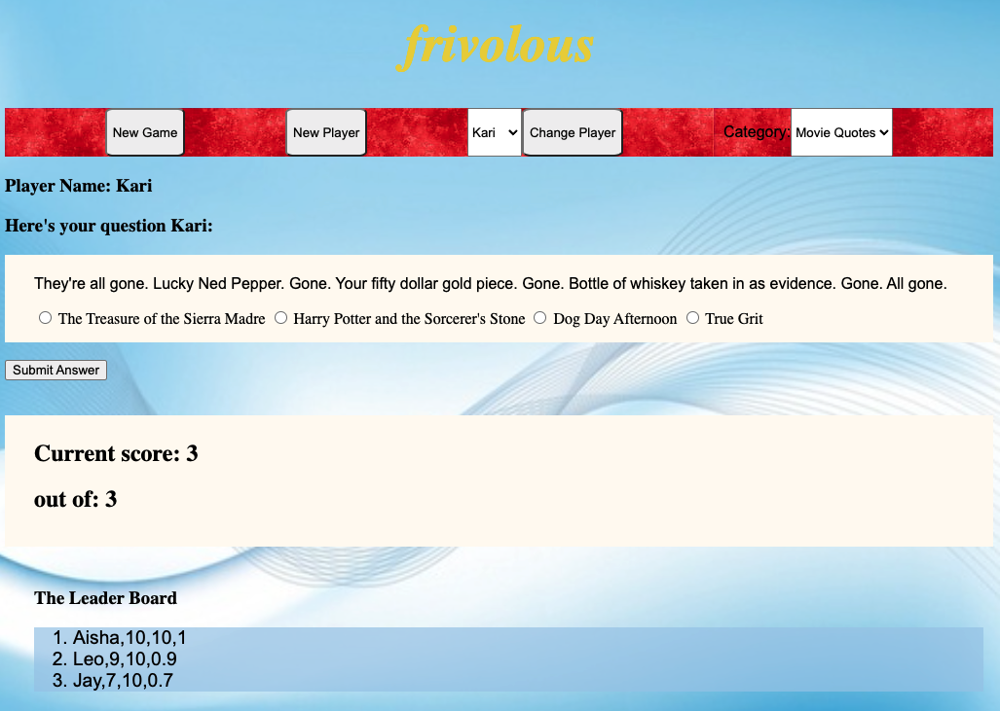

General Assembly Software Engineering Immersive Projects
In August of 2021 I entered General Assembly's Software Engineering Immersive (SEI) program. The 12 weeks of Deere-sponsored training included HTML, CSS, JavaScript, React, Postgres, Git/GitHub, and Python. Trainees completed four projects. Each project increased in complexity. Below are my SEI projects listed from the most recent (and complex) to the first.
Project 4
Jay's Fretboard - A Full Stack Development ProjectWritten for guitar entusiasts, my fretboard application provides an easy way for aspiring guitarists to use the Circle of Fifths to improve their play without the rigor of learning songs. When the user selects a musical key from a dropdown menu, the Circle highlights chords that work well in that key. At the same time, chord diagrams are provided and two to four musical scales are provided. The user can record his/her chord progressions and play them back while playing licks using the provided scales.
Backend - Node.js application written in Javascript, HTML, CSS, Postgres SQL database, with multiple APIs.
Frontend - Interactive React application utilizing backend API calls. Application image files are stored on Amazon S3.
Project 3
Drinks Ahoy!! - AReact application utilizing multiple APIsThis project is written in React. The application accesses four different endpoints from www.cocktaildb.com to provide recipes for adult beverages. Drinks are retrieved either at random, by ingredient, in alphabetical lists, or via user-entered search. I partnered with a classmate on this project. Each of us developed features in our own Git branches and then merged and pushed code to our main repository on GitHub.
Project 2
A Node.js application written in Javascript, HTML, and CSS, with a Postgres SQL database on the backend. The guitar tab application has full CRUD capability. Users can create a new guitar tab record, update an existing record, and delete a record. Users also have the ability to add new artists to the artist table.
Project 1
Written mostly in JavaScript, frivolous is trivia game. For this project I was mainly interested in working with arrays. I created three two-dimensional arrays for for trivia categories. Each element holds a question and an answer. There are only 15 questions per category. Each round, ten questions are randomly selected from the chosen category and placed in a questions array. The answer is randomly placed in one of four elements of an answers array. The other three elements of the answers array are pulled at random from the answer elements of the remaining 14 elements in the chosen category.
Simpson College Computer Science Project
The J8CM - My 8-bit computer model

While working on my B.A. in Computer Science back in the 1990s, I took a class in computer architecture and design. As a project for that class, I wrote a computer simulator based on some of the machines I'd worked on in the late 70s and through the 80s. I named it, Jay's 8-bit Computer Model (J8CM). The program was written using Borland C 4.0 on a Microsoft Windows computer. In July, 2021 I decided to port the code (I saved it on a 3.5 inch floppy disk) to gcc on Linux.
My YouTube channel contains several videos that demonstrate the program. Source code and documentation are available on my GitHub page.
J8CM Machine Language

The J8CM is an accumulator-based model. As reflected by the instruction format, the J8CM contains 32 instructions, 4 addressing modes, and 2 general-purpose registers. Instructions and data can be loaded directly into the J8CM memory by setting the appropriate bits. Programs can be run completely, stepped through each instruction cycle, or at the fetch and execute level.

J8CM Assembly Language
The j8cm includes a compiler for writing assembly language code. The compiler outputs several files. During pass 1 the compiler produces a symbol file and an error log. In pass 2 the compiler produces an object file (.obj extender). The object file is used when the operator wants to load the compiled output directly into the j8cm memory. Another file type has the .ldr extender and is used to load the file into the j8cm loader. The loader simulates a tape device. The final file is a summary file that can be used to troubleshoot issues with the code.
Documentation has been ported to the open document format (odt) and can be found on my GitHub repo at https://github.com/jaybabel/j8cm_documentation.
Classic Travels LLC Website
A website for my mother-in-law's travel business. As the family IT guy, I setup the website.
Visual Basic for MS Excel
The first semester of my MBA program included a virtual course in Visual Basic for Microsoft Excel. My final project in that class was a program I could use to manage Little League baseball games. For me, it was important to give the boys opportunities to play different posisitions. I also wanted to give them approximately the same number of at-bats through the season while maintaining a batting order that produced the most runs.

At John Deere I developed a few tools in VBA. When we retired a system for the Torrance office, I exported three tables from MS SQL and created an Excel program to search the tables and provide sales information from the old system.
For the Waterloo location, I created Excel tools to manage asset location standards and Active Directory group membership.